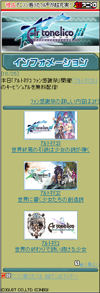
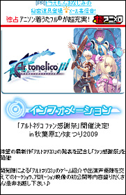
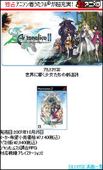
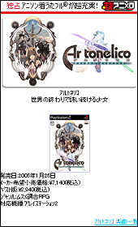
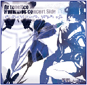

▲モバイルサイトトップページ
※実際のサイトとは異なる場合がございます。
ご了承ください。
(株)ドワンゴが運営する携帯サイト「超！アニメロ」に、『アルトネリコ3』公式モバイルサイトが電撃オープン★
キービジュアルの無料待受や、ヒュムノスを始め歴代シリーズの名曲・着うたフル(R)を大好評配信中だよ♪
今後も、名場面・イラストのアニメロ限定待受やFLASH(R)、PVナドナド…『アルトネリコ3』の携帯アイテムが
いっぱいラインナップされていくゾ!! 絶対お見逃しなくっ!!!

▲アルトネリコ３トップページ

▲アルトネリコ２トップページ

▲アルトネリコトップページ
対象／アクセス方法
■対象
■アクセス方法
iMenu⇒メニューリスト⇒着うたフル⇒キャラクター/アニメ/ゲーム⇒超！アニメロ
au one⇒カテゴリ（メニューリスト）⇒着うたフル・ビデオクリップ⇒アニメ・ゲーム⇒超！アニメロ
メニューリスト⇒着うたフル⇒映画・CM・アニメ⇒超！アニメロ
『アルトネリコ３』公式モバイルサイトへは
２次元バーコードから直接アクセス！
「超！アニメロ」にて配信中の「アルトネリコ」「アルトネリコ２」のヒュムノス曲目一覧
■「アルトネリコ」ヒュムノス曲目一覧
月奏～ツキカナデ～ アルトネリコ ヒュムノスコンサート side紅
１、LORE
２、EXEC_LINCA/.
３、EXEC_PAJA/.#Orica extracting
４、EXEC_RE=NATION/.
５、COSMOSCAPE
６、EXEC_SUSPEND/.
７、EXEC_RIG=VEDA/.
８、EXEC_PHANTASMAGORIA/.
９、月奏～ツキカナデ～
１０、MEMORY
星詠～ホシヨミ～ アルトネリコ ヒュムノスコンサート side蒼

１、Legend of Artonelico～ミュール生誕～
２、謳う丘-Harminics EOLIA
３、EXEC_CHRONICLE_KEY/.
４、York of love.
５、そよ風の思い出
６、EXEC_PAJA_M/.#Misya extracting
７、EXEC_HARMONIUS/.
８、星詠～ホシヨミ
９、そよかぜのうた
１０、舞少女
■「アルトネリコ2」ヒュムノス曲目一覧
焔～ホムラ～ アルトネリコ２ ヒュムノスコンサート side紅
１、BASARA
２、EXEC_METAFALICA/.
３、EXEC_SOL=FAGE/.
４、EXEC_VIENA/.
５、Hartes ciel, melenas walasye.
６、EXEC_with.METHOD_METAFALICA/.
７、焔～HOMURA
８、EXEC_SPHILIA/.
９、EXEC_DESPEDIA/.
１０、EXEC_HARMONIUS_FYUSION/.
１１、こころ語り
１２、染～SEN～此ノ花咲ク耶
澪～ミオ～ アルトネリコ２ ヒュムノスコンサート side蒼
１、Opening～共鳴反応
２、謳う丘～Harmonics FRELIA～
３、METHOD_IMPLANTA/.
４、METHOD_METAFALICA/.
５、METHOD_REPLEKIA/.
６、EXEC_over.METHOD_SUBLIMATION/
.～lamenza
７、EXEC_over.METHOD_SUBLIMATION/
.～ee wassa sos yehar
８、EXEC_over.METHOD_SUBLIMATION/
.～omness chs ciel sos infel
９、澪～MIO
１０、聆紗の子守唄
１１、永久に結ひて
１２、EXEC_HAIBANATION/.
１３、絆～KIZNA
■㈱ドワンゴが運営する「超！アニメロ」サービス概要：
http://pc.animelo.jp/choanimelo/about.html
■アルトネリコ総合情報ファンサイト「アルポータル」：
http://ar-tonelico.jp/
■アルトネリコ３公式サイト：
http://ar-tonelico.jp/at3/
©GUST CO.,LTD. 2010 ©2010 NBGI